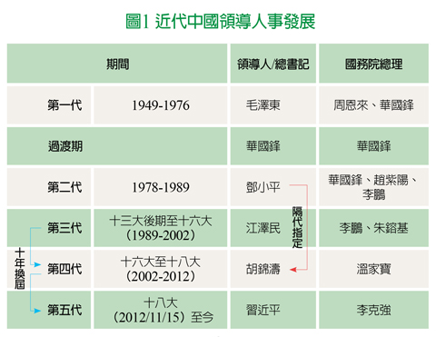

十九大，中國「習」引力
近月中國社交網媒最夯的，不是中國有嘻哈的Freestyle，而是一首暗示十九大中南海可能人事變動的《換屆歌》。十八大後新接班的中國第五代領導人習近平，大刀闊斧改組人事，掀起政壇巨浪。過去五年官員起落，號稱文革後之最。本月十九大會議，為習政權檢驗政治成果的重要時刻。今年政府的「維穩」思維，營造上半年景氣及金融市場向榮局面。十九大的發展，料是「習」引力續航的關鍵。
一、什麼是十九大
十九大全名為「中國共產黨第十九次全國代表大會」，是黨的最高權力機關。每五年召開一次，會期長達七日 (今年舉辦日期為10月18日至24日)。會議目的，係選出下一屆中央委員會，及領導國家機器的政治局委，為休會期間領導單位。
以黨領政，中國政治權力層級的解讀
共產黨全國代表大會的重要性，建構在中國以黨領政的政治制度。
體制上象徵民意的全國人民代表大會 (簡稱人大)，為國家最高權力機關，掌握立法權力，代表人民選出國家主席、國務院總理等人選。不過，中國憲法規定，中國共產黨為國家領導。以黨領政下，人民代表大會必須接受及服從中國共產黨的指導。因此，每五年召開一次的全國黨代表大會，方為政治運作上實質最高指導機構。這讓黨的領導人，也就是中央委員會總書記，及政治局委，成為中南海運作的實質領導核心。中央政府的國務院等部會，僅是執行機構。
二、十九大的可能人事
預期十九大的政治局七席常委，總書記習近平及國務院總理李克強將留任。現任國務院副總理汪洋，及中央辦公廳主任栗戰書，可望進入七人小組。剩下的三位人選，或來自現任重慶市委書記陳敏爾，現任上海市委書記韓正，現任廣東省委書記胡春華，及現任中紀委書記王岐山。
値得注意的是，自江澤民退任後，隔代指定及十年交班成為領導權交替的兩個特性 (見圖1。當黨全國代表大會西元年號尾數為2時，進行領導政權交接。年號尾數逢7時，將現下一代領導人的可能人選。這次十九大的重點，就是要觀察常委人事，以掌握五年後中國領導權變化的可能脈動。

資料來源：國泰世華銀行投資研究團隊彙整
三、十九大習引力的三個觀察
第1個觀察：「習」捲中國，從中央到地方
透過反貪腐的落實，習近平的舊部門生，從中央到地方形塑習核心政治版圖。今年甫上任的上海市長應勇，即為習近平浙江舊部，屬之江新軍成員。目前北京市委書記蔡奇，為習近平主政福建時的重要幫手; 王歧山嫡系蔣超良則接任湖北省委書記。預期十九大後以之江新軍、閩滬舊部及老王門生為主的習勢力，將進一步取代江派及團派，成為政壇核心力量。
第2個觀察：王岐山入常，打破七上八下常規?
現任中紀委書記王岐山，為習近平實踐從嚴治黨理念的重要幫手。王岐山今年已69歲，不符合中共人事「70歲退休，68歲不再入常」潛規則。不過，從近期「被肝癌」及之後的高調曝光，顯示王歧山仍不排除入常可能。另一方面，若王歧山不再入常，現大內總管栗戰書接任的可能性高，嚴格執行的反貪腐動作，料將持續。
第3個觀察：誰是常務書記?
在十年換屆的常規中，十九大的常務書記，可能就是中國下一任領導人。現階段臆測人選有二，一位是現任廣東省委書記胡春華。其屬前任領導人胡錦濤派系，符合近代隔代指定的慣例。另一位為現任重慶市委書記陳敏爾。其為習近平主政浙江時的得力助手，並協助以專欄《之江新語》 闡述政治理念，具習家軍身份優勢。若五年後習近平持續連任，亦可藉由陳敏爾來延續政治權力，為進可攻、退可守的人事安排。
【揭露事項與免責聲明】
本報告為國泰世華銀行 (下稱 “本公司”) 提供尊貴理財客戶之參考資料，並非針對特定客戶所作的投資建議，且在本報告撰寫過程中，並未考量讀者個別的財務狀況與需求，故本報告所提供的資訊無法適用於所有讀者。
本報告係根據本公司所取得的資訊加以彙集及研究分析，本公司並不保證各項資訊之完整性及正確性。本報告中所提出之意見係為本報告出版當時的意見，邇後相關資訊或意見若有變更，本公司將不會另行通知。本公司亦無義務持續更新本報告之內容或追蹤研究本報告所涵蓋之主題。本報告中提及的標的價格、價值及收益隨時可能因各種本公司無法控制之政治、經濟、市場等因素而產生變化。本報告中之各項預測，均係基於對目前所得資訊作合理假設下所完成，所以並不必然實現。本報告不得視為買賣有價證券或其他金融商品的要約或要約之引誘。
國泰金融集團 (下稱 “本集團”) 所屬各公司可能個別基於特定目的且針對特定人士出具研究報告、提供口頭或書面的市場看法或投資建議 (下稱 “提供資訊”)，鑑於提供資訊之單位、時間、對象及目的不同，本報告與本集團其他單位所提供資訊可能有不一致或相牴觸之情事; 本集團所屬公司從事各項金融業務，包括但不限於銀行、保險、證券經紀、承銷、自有資金投資、資產管理、證券投資信託等。本集團各公司對於本報告所涵蓋之標的可能有投資或其他業務往來關係，各公司從事交易之方向亦可能與本報告不一致，讀者應審慎評估自身投資風險，自行決定投資方針，不應以前述不一致或相抵觸為由，主張本公司或本集團其他成員有侵害讀者權益之情事。